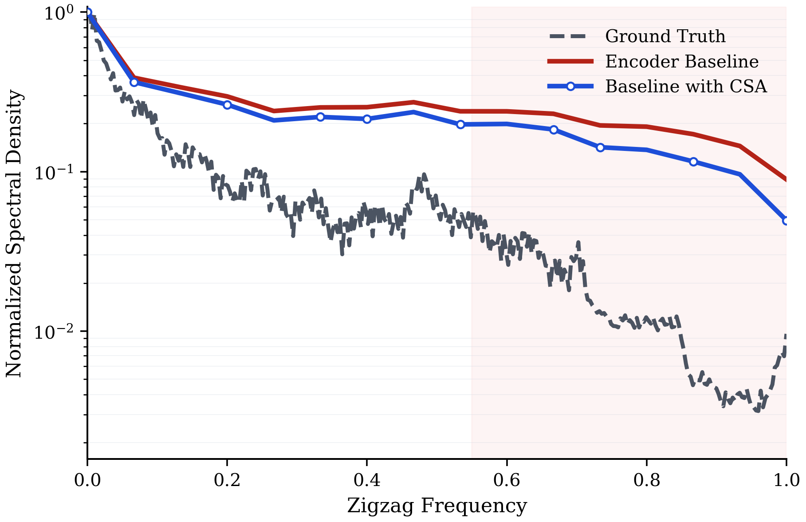
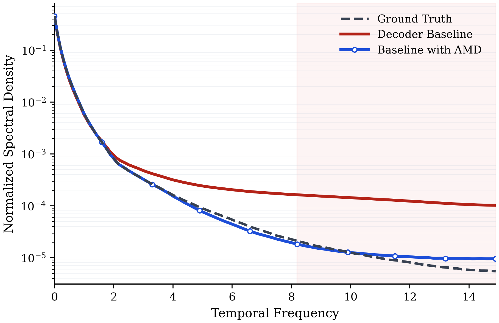
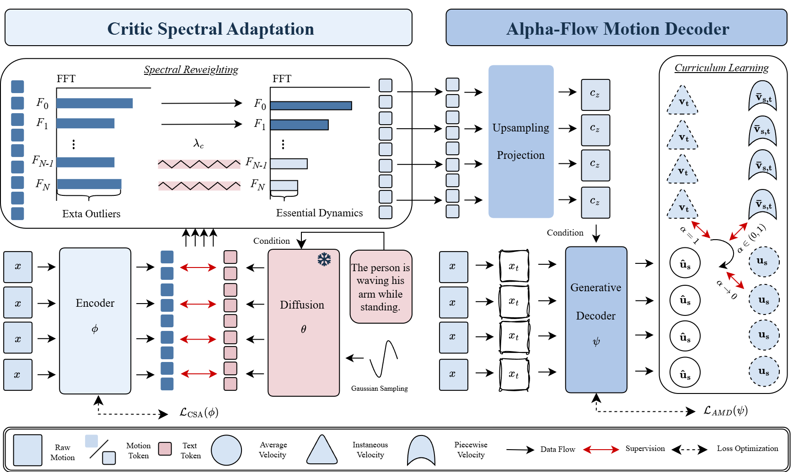

Abstract
Latent diffusion models paired with a variational auto-encoder (VAE) tokenizer have shown promising performance for efficient text-driven human motion generation. However, motion latent diffusion suffers from a generation-reconstruction trade-off: simply increasing tokenizer capacity enhances reconstruction but fails to proportionally improve text-conditioned generation quality. We assume this trade-off stems from a spectral mismatch inside the VAE tokenizer: the encoder yields a latent space biased toward high frequencies, and the decoder introduces temporal artifacts. In this paper, we propose the Diffusable Motion Tokenizer (DiMoT) to improve the diffusability of the tokenizer, rather than scaling up the diffusion backbone. To improve text-conditioned optimization, Critic Spectral Adaptation (CSA) leverages a pretrained diffusion model as the critic to suppress high-frequency latent energy. To preserve motion dynamics, the Alpha-Flow Motion Decoder (AMD) performs generative decoding via average-velocity prediction, enabling efficient one-step decoding. Extensive experiments demonstrate that DiMoT achieves state-of-the-art performance across various challenging text-to-motion benchmarks, yielding superior motion fidelity and text-motion alignment.
Spectral Mismatch in Motion Tokenizers

(a) Latent spectral profile

(b) Motion spectral profile
Critic Spectral Adaptation (CSA)
Uses a frozen pretrained diffusion model as a text-conditioned critic to adapt the tokenizer encoder through spectral reweighting.
Alpha-Flow Motion Decoder (AMD)
Learns latent-conditioned average-velocity prediction with curriculum training for efficient one-step generative motion decoding.
Method Overview

Motion Gallery
Motion 1 of 6
BibTeX
@inproceedings{huang2026dimot,
title={Improving the Diffusability of Motion Tokenizer},
author={Huang, Guanhe and Han, Songqiao and Lian, Tangzheng and Celiktutan, Oya},
booktitle={Advances in Neural Information Processing Systems},
year={2026},
url={https://openreview.net/forum?id=fnQkgTUCzX}
}